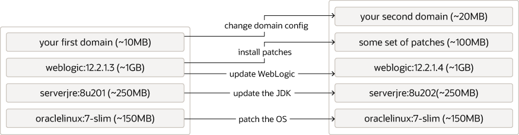
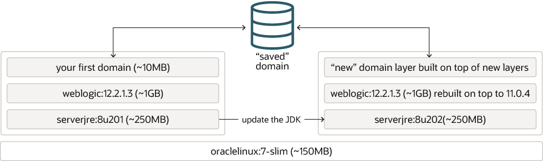

レイヤー化の詳細を理解したので、CI/CDプロセスにとって重要な理由について説明します。 ドメインに対して行う更新の種類を考えてみましょう:
次の方法でドメインを更新できます:
ドメイン構成自体(最上位レイヤー)を更新するのみの場合は、非常に簡単です。 必要な変更を行い、そのレイヤーの新しいバージョンを保存してから、ドメインをロールします。 また、デルタを含む既存の最上位レイヤーの上に別のレイヤーを構築することもできます。 変更が小さい場合は、単に別の小さいレイヤーで終了し、小さいレイヤーは問題になりません。
しかし、より複雑なシナリオを考えてみます - レイヤーの影響を理解するために、例としてJDKを更新します。 前述の例に示すように、JDK 8u201から8u202に更新するとします。 最初のドメイン・イメージを取得してJDKを更新した場合は、JDK 8u202を含む新しいレイヤーで終了します。 JDK 8u201を使用する他のレイヤーは引き続き存在します。ディレクトリを削除しても、その領域は元に戻りません。 これで、1.5 GBの「イメージ」が1.75 GBに拡張されました。 これは理想的ではなく、低いレイヤーを変更しようとする頻度が高いほど、取得される悪化します。
「JDKレイヤーを新しいレイヤーと入れ替えることはできませんか。」 それは素晴らしい質問ですが、今日の不幸な現実はそれを行う信頼できる方法がないことです。 このようなアクションを有効にするDockerのリベース機能の作成には様々な試行がありますが、一部の調査では、このような実装に必要な詳細レベルでのレイヤー化の動作が制限されているため、ほとんど破棄されていることが示されます。
次に、「ああ、わかりました。では、この新しいレイヤーでJDKより上のレイヤーを再構築するだけですね。」と考えることができます。 それはとても正しいです。 ただし、Domain in Imageドメインには大きな注意事項があります。 WebLogicドメインを作成すると、ドメイン暗号化キーが作成されます。 このキーはドメイン内のsecurity/SerializedSystemIni.datファイルに格納され、パスワードなど、ドメイン構成内の他のいくつかのものを暗号化するために使用されます。 今日(WebLogic Server 12.2.1.4.0内)では、この暗号化キーを簡単に"抽出"または"再利用"する方法はありません。 それでは、これは実際にはどういう意味ですか。
CI/CDプロセスでDomain in Imageドメインを再作成する場合、すべての目的および目的が前のドメインと同じドメインであっても、暗号化キーは異なります。
つまり、技術的には、Domain in Imageタイプのドメインとは異なるドメインです。 これは問題ですか。 おそらくそうではありません。 これは依存します。 ドメインのローリング再起動を実行する場合は、必須です。 最初に、オペレータは古いドメイン暗号化キーで暗号化されたサーバーを起動するための資格証明をインジェクトしようとするため、新しいサーバーの起動に失敗します。
ただし、これによってDomain in Imageポッドの起動が妨げられなかった場合でも、問題が発生します。 暗号化キーが異なるドメインのメンバーを持つことはできません。 WebLogicが別のキーを使用してドメインに参加しようとする新しいメンバーを見つけた場合、それは侵入者とみなされ、ドメインへの受入れが拒否されます。 クライアントHTTPセッションは2つの異なるサーバー・セット間で動作しないため、クライアントにエラーが表示され、再試行が必要になる可能性があります。 この2つの異なるサーバー・セットが同じリソースにアクセスしようとすると、データが破損する可能性があります。
それでは、何ができるでしょうか。 ドメインをロール・ダウンできませんでしたが、まず古いバージョンを完全にシャットダウンしてから、新しいバージョンを起動してください。 このようにして、非互換性に関する問題を回避しますが、簡単な停止を導入します。 これは許容される場合もあれば、許容されない場合もあります。
別のオプションは、同じドメイン、つまり同じドメイン暗号化キーを保持する方法を見つけることで、ドメインをロールして競合が発生しないようにすることです。
ドメインの暗号化キーを失うことなく、Domain in Imageドメインの下位レイヤーで変更を行う場合は、次の図に示すように、ドメインを保存し、後で他の新しい(下位)レイヤーの上にある新しいレイヤーに戻す方法を見つける必要があります:
プロセスは次のようになります: